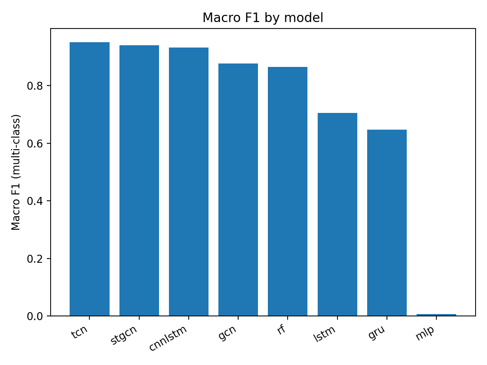
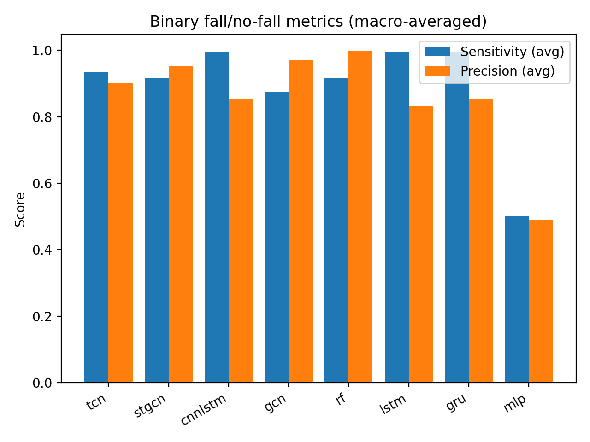
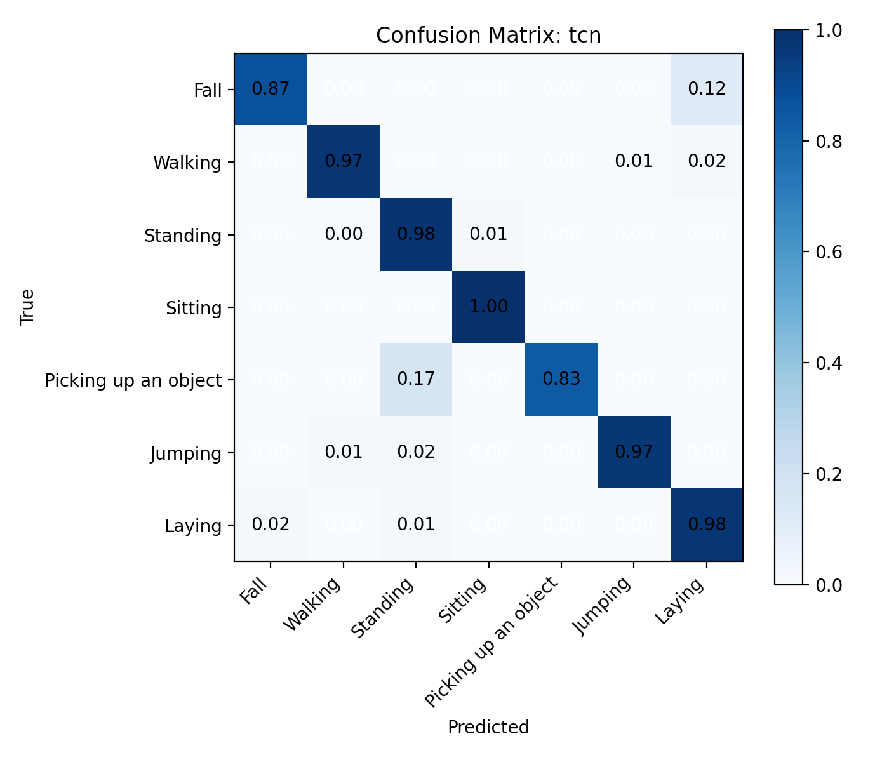
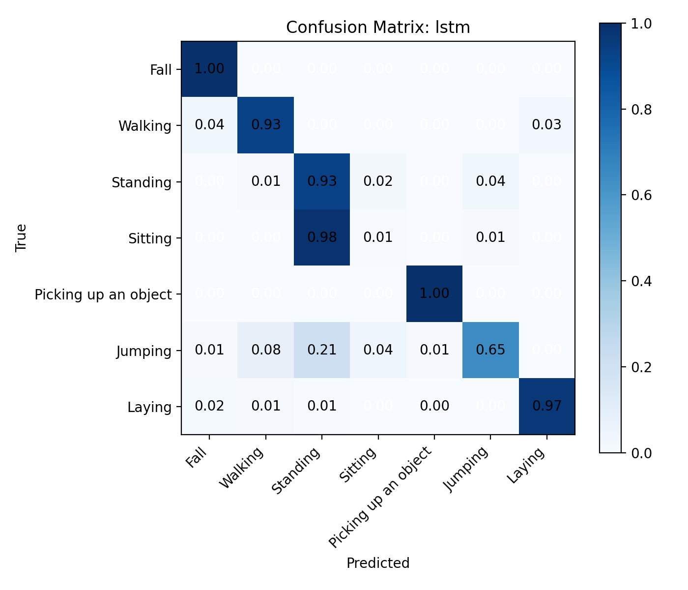
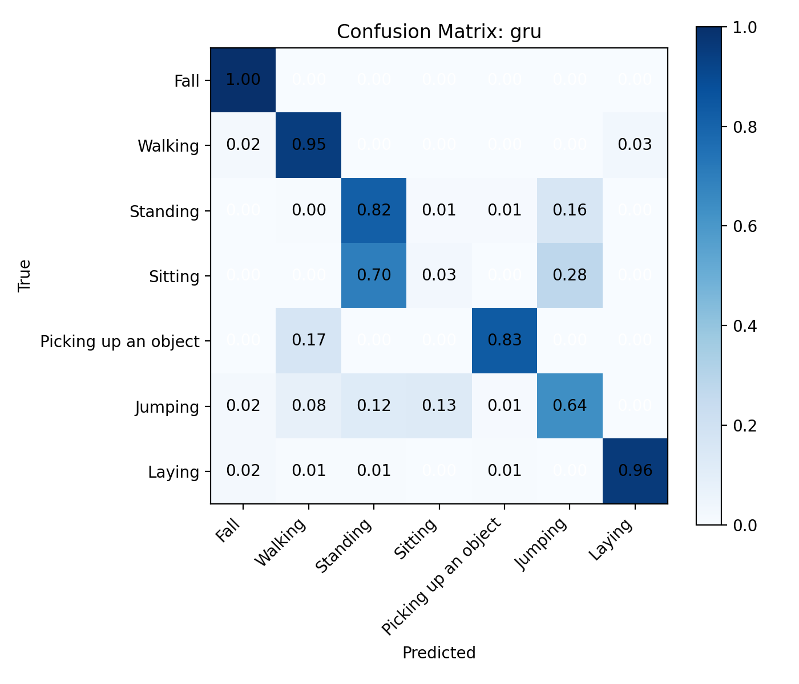
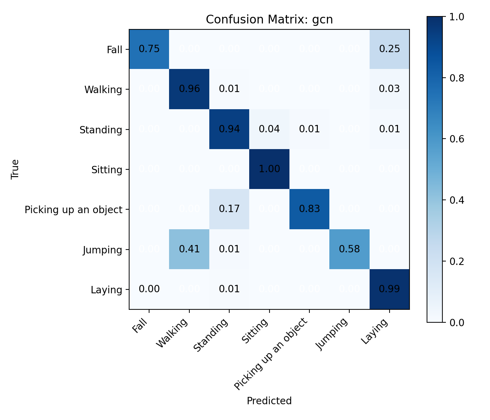
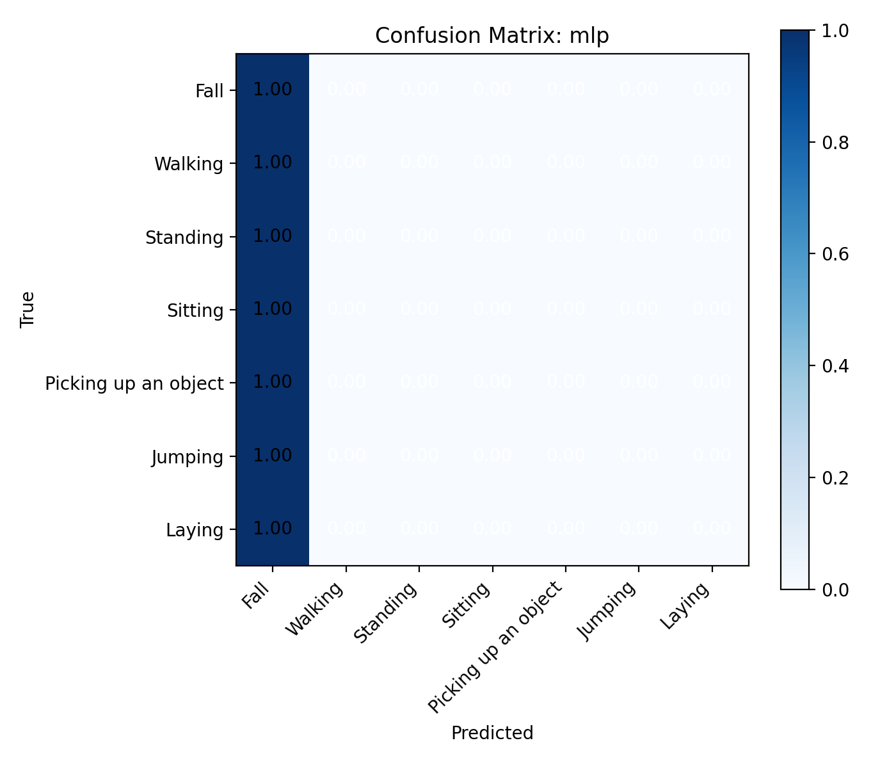
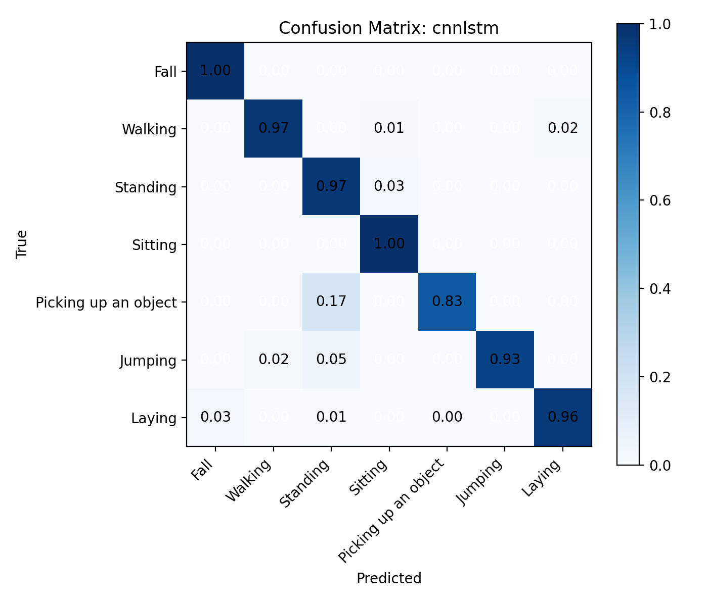
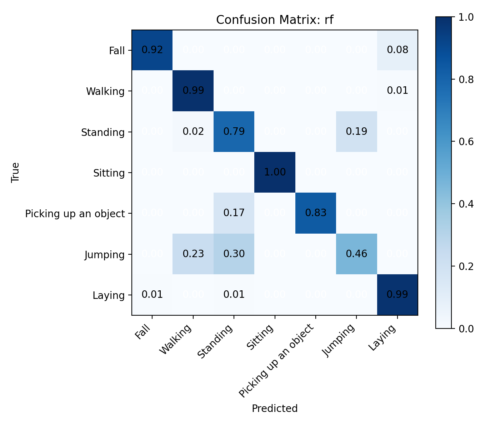

Binary fall/no-fall metrics are computed by collapsing multi-class labels using the provided fall class ids, then macro-averaging precision and sensitivity over the two binary classes.
| model | n_samples | params_m | macro_f1 | binary_mode | p_fall_source | threshold | beta | tune_subjects | tuned_threshold | tuned_precision_fall | tuned_recall_fall | tuned_fbeta | binary_precision_avg | binary_sensitivity_avg | binary_precision_fall | binary_sensitivity_fall | binary_precision_no_fall | binary_sensitivity_no_fall | binary_f1_avg | binary_f1_fall | binary_f1_no_fall | weights | camera | subjects |
|---|---|---|---|---|---|---|---|---|---|---|---|---|---|---|---|---|---|---|---|---|---|---|---|---|
| tcn | 1061 | 0.421639 | 0.950984 | threshold | activity_softmax | 0.5 | 2.0 | None | None | None | None | None | 0.902397 | 0.935089 | 0.807692 | 0.875000 | 0.997101 | 0.995178 | 0.918069 | 0.840000 | 0.996139 | models/tcn/2026-02-11_12-07-58_473921/tcn_best.pt | 1 | 16,17 |
| stgcn | 1061 | 0.660103 | 0.939881 | threshold | activity_softmax | 0.5 | 2.0 | None | None | None | None | None | 0.952621 | 0.915702 | 0.909091 | 0.833333 | 0.996150 | 0.998071 | 0.933338 | 0.869565 | 0.997110 | models/stgcn/2026-02-11_12-07-58_473921/stgcn_best.pt | 1 | 16,17 |
| cnnlstm | 1061 | 0.168039 | 0.932113 | threshold | activity_softmax | 0.5 | 2.0 | None | None | None | None | None | 0.852941 | 0.995178 | 0.705882 | 1.000000 | 1.000000 | 0.990357 | 0.911371 | 0.827586 | 0.995155 | models/cnnlstm/2026-02-11_12-07-58_473921/cnnlstm_best.pt | 1 | 16,17 |
| gcn | 1061 | 0.005447 | 0.876286 | threshold | activity_softmax | 0.5 | 2.0 | None | None | None | None | None | 0.970805 | 0.874518 | 0.947368 | 0.750000 | 0.994242 | 0.999036 | 0.916921 | 0.837209 | 0.996633 | models/gcn/2026-02-11_12-07-58_473921/gcn_best.pt | 1 | 16,17 |
| rf | 1061 | NaN | 0.864529 | threshold | rf_predict_proba | 0.5 | 2.0 | None | None | None | None | None | 0.998079 | 0.916667 | 1.000000 | 0.833333 | 0.996158 | 1.000000 | 0.953583 | 0.909091 | 0.998075 | models/rf/2026-02-11_12-07-58_473921/rf_best.pkl | 1 | 16,17 |
| lstm | 1061 | 0.304263 | 0.705372 | threshold | activity_softmax | 0.5 | 2.0 | None | None | None | None | None | 0.833333 | 0.994214 | 0.666667 | 1.000000 | 1.000000 | 0.988428 | 0.897090 | 0.800000 | 0.994180 | models/lstm/2026-02-11_12-07-58_473921/lstm_best.pt | 1 | 16,17 |
| gru | 1061 | 0.228487 | 0.647106 | threshold | activity_softmax | 0.5 | 2.0 | None | None | None | None | None | 0.852941 | 0.995178 | 0.705882 | 1.000000 | 1.000000 | 0.990357 | 0.911371 | 0.827586 | 0.995155 | models/gru/2026-02-11_12-07-58_473921/gru_best.pt | 1 | 16,17 |
| mlp | 1061 | 3.376391 | 0.006320 | threshold | activity_softmax | 0.5 | 2.0 | None | None | None | None | None | 0.488690 | 0.500000 | 0.000000 | 0.000000 | 0.977380 | 1.000000 | 0.494280 | 0.000000 | 0.988561 | models/mlp/2026-02-11_12-07-58_473921/mlp_best.pt | 1 | 16,17 |
Values are percentages. Precision/recall/specificity/F1 are macro-averaged over classes present in this split.
| model | accuracy | recall | specificity | precision | f1_score |
|---|---|---|---|---|---|
| tcn | 97.738 | 94.418 | 99.596 | 96.040 | 95.098 |
| stgcn | 97.832 | 96.188 | 99.619 | 92.798 | 93.988 |
| cnnlstm | 96.890 | 95.202 | 99.471 | 92.002 | 93.211 |
| gcn | 93.214 | 86.484 | 98.775 | 91.059 | 87.629 |
| rf | 89.915 | 85.503 | 98.287 | 87.795 | 86.453 |
| lstm | 74.741 | 78.310 | 95.527 | 68.032 | 70.537 |
| gru | 72.762 | 74.631 | 95.346 | 61.122 | 64.711 |
| mlp | 2.262 | 14.286 | 85.714 | 0.323 | 0.632 |


| model | class_id | class_name | f1 |
|---|---|---|---|
| cnnlstm | 0 | Fall | 0.827586 |
| cnnlstm | 1 | Walking | 0.979167 |
| cnnlstm | 2 | Standing | 0.967890 |
| cnnlstm | 3 | Sitting | 0.979899 |
| cnnlstm | 4 | Picking up an object | 0.833333 |
| cnnlstm | 5 | Jumping | 0.963351 |
| cnnlstm | 6 | Laying | 0.973561 |
| gcn | 0 | Fall | 0.837209 |
| gcn | 1 | Walking | 0.886256 |
| gcn | 2 | Standing | 0.957746 |
| gcn | 3 | Sitting | 0.979899 |
| gcn | 4 | Picking up an object | 0.769231 |
| gcn | 5 | Jumping | 0.730769 |
| gcn | 6 | Laying | 0.972892 |
| gru | 0 | Fall | 0.786885 |
| gru | 1 | Walking | 0.943590 |
| gru | 2 | Standing | 0.653211 |
| gru | 3 | Sitting | 0.046512 |
| gru | 4 | Picking up an object | 0.625000 |
| gru | 5 | Jumping | 0.504000 |
| gru | 6 | Laying | 0.970543 |
| lstm | 0 | Fall | 0.786885 |
| lstm | 1 | Walking | 0.932990 |
| lstm | 2 | Standing | 0.637224 |
| lstm | 3 | Sitting | 0.009756 |
| lstm | 4 | Picking up an object | 0.857143 |
| lstm | 5 | Jumping | 0.739884 |
| lstm | 6 | Laying | 0.973725 |
| mlp | 0 | Fall | 0.044240 |
| mlp | 1 | Walking | 0.000000 |
| mlp | 2 | Standing | 0.000000 |
| mlp | 3 | Sitting | 0.000000 |
| mlp | 4 | Picking up an object | 0.000000 |
| mlp | 5 | Jumping | 0.000000 |
| mlp | 6 | Laying | 0.000000 |
| rf | 0 | Fall | 0.916667 |
| rf | 1 | Walking | 0.932367 |
| rf | 2 | Standing | 0.812352 |
| rf | 3 | Sitting | 1.000000 |
| rf | 4 | Picking up an object | 0.909091 |
| rf | 5 | Jumping | 0.491979 |
| rf | 6 | Laying | 0.989247 |
| stgcn | 0 | Fall | 0.869565 |
| stgcn | 1 | Walking | 0.968912 |
| stgcn | 2 | Standing | 0.981567 |
| stgcn | 3 | Sitting | 0.989848 |
| stgcn | 4 | Picking up an object | 0.800000 |
| stgcn | 5 | Jumping | 0.984615 |
| stgcn | 6 | Laying | 0.984663 |
| tcn | 0 | Fall | 0.840000 |
| tcn | 1 | Walking | 0.981818 |
| tcn | 2 | Standing | 0.977064 |
| tcn | 3 | Sitting | 0.992366 |
| tcn | 4 | Picking up an object | 0.909091 |
| tcn | 5 | Jumping | 0.979592 |
| tcn | 6 | Laying | 0.976959 |
Rows are true labels, columns are predicted labels. Labels follow the merged 7-class scheme.







Generated by models.eval_models.